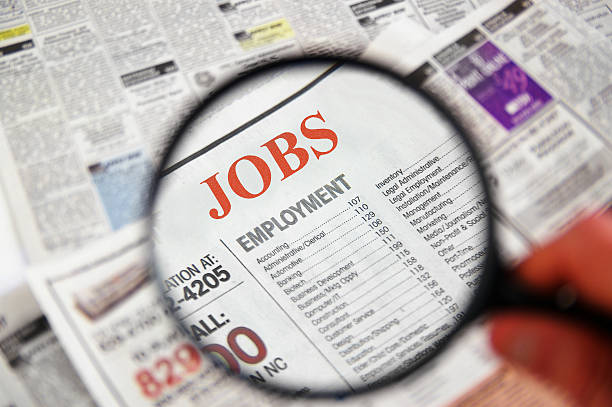

True progress cannot be measured by economic charts alone. Joblessness and unemployment sit at the crossroads of our financial survival, our right to fair treatment, and our shared duty to look out for one another. To truly understand why this issue matters, we have to look at it from two essential angles: the reality of how our society functions and the moral obligation we have to protect human dignity.
Looking through the lens of widespread unemployment acts like a brake on national growth. When thousands of households lack a steady paycheck, families naturally cut back on spending. Local shops lose customers, businesses slow down, and the entire market becomes fragile. While it is easy to blame individuals for not trying hard enough, the reality is often rooted in deeper systemic gaps like a shortage of decent job openings and a mismatch between what schools teach and what industries actually need. A nation simply cannot move forward when a huge portion of its people are sitting on the sidelines, unable to share their skills.
The problem goes even deeper than lost income; it becomes a violation of human dignity. Work is more than just a way to pay the bills—it is how people support their loved ones, discover their purpose, and build genuine self-respect. When people face months or years without honest work, desperation sets in, leaving them vulnerable to exploitation and unfair practices. Our moral responsibility calls us to stand for truth and social justice, reminding us that every person has inherent value that goes far beyond their economic output.
tackling unemployment requires us to bridge the gap between economic strategy and moral compassion. Neither market reforms nor charity can succeed on their own our policies must value people just as much as profit. By addressing both the structural barriers in our economy and our ethical duty to uplift the vulnerable, we move closer to a society where fair opportunities are the norm rather than the exception.

At the end of the day, solving this crisis is a shared mission that belongs to all of us. The government, private sectors, local communities, and everyday citizens must work hand in hand to build a future that is both prosperous and humane. Real progress happens only when truth, justice, and respect guide our actions ensuring that every person has the chance to earn an honest living with dignity.
As unemployment continues to grow, many people can go jobless and it may resort to people finding it hard to support their families, their lifestyle and needs. This may affect the economy as well for it can cause major issues like a higher expenses which jobless people may not be able to support nor have Sustanance
This is something that will continue to grow as a problem since jobs is as important as it is one of the things which support adults which in our economy is all about work culture and having no jobs could mean no salary meaning you will be not be able to pay for your wants and needs
In conclusion unemployment is a seeking Rise of problem in today's economy since things like machinery and ai work can replace such labor work. Thats why we need to seek justice to share our boundaries and have everyone get opportunities for jobs so that we can work together as a unified community to help and serve one another in business and to give a contribution to wherever we go as we follow our duty in our respected occupations.
Philippines Statisticts Authority
GROUP 2
Lynn Sherish, GASULAS
Jaden Faye, AWAYAN
JonFel, MADELO
Mazy, SALIBUNGCOGON
Leoj, BONOSTRO